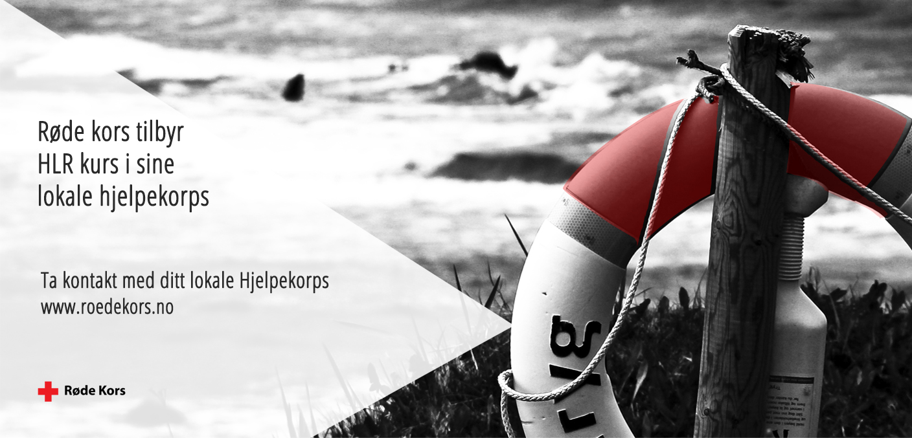

H
hjerte
L
lunge
R
redning
Ikke sett ditt eget liv i fare ved å redde andre
Dette gjør du om du ser et menneske falle i vannet
Sterkt nedkjølt person (våken)
Ta av vått tøy og skift til tørre og varme klær, eventuelt varme ulltepper
Søk ly for nedbør og vind
Drikk varm, gjerne sukkerholdig drikke
***
Bevisstløs person som puster og har puls
Legg pasienten i stabilt sideleie
Tilkall hjelp - nødnummer 113
Ikke forlat personen, pass på at pust og puls er bra
***
Bevisstløs person uten pust og puls
Tilkall hjelp - ring 113
Fjern klær fra brystkassen
Start hjerte-lunge-redning
***
SE VIDEOEN FOR Å LÆRE HLR
Your browser does not support HTML5 video.
